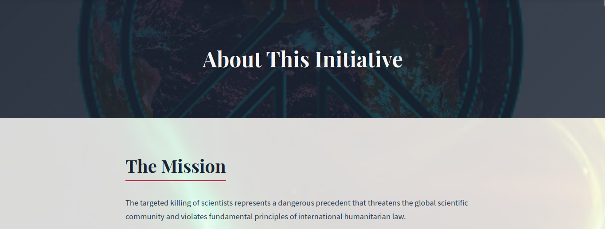
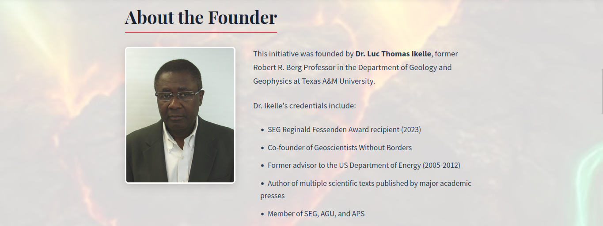
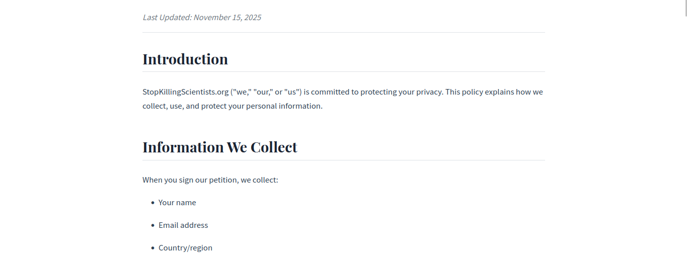

Case Study: Stop Killing Scientists - Advocacy Platform
Client
Dr. Luc Thomas Ikelle - former Texas A&M professor and SEG award recipient
Project Overview
Dr. Ikelle, a former Texas A&M professor and SEG award recipient, needed a digital platform to launch an international petition calling for protocols to protect scientists during conflicts.
The site needed to collect and verify signatures from a global audience, display social proof through recent supporter lists and stats, accept donations through multiple payment methods, and communicate serious subject matter appropriately.
But some constraints include a limited budget (WordPress+HostGator) and how such a sensitive subject needs a professional / credible presentation.
Solution
The petition targets the academic community, policy makers and international organizations, as well as the general public concerned with humanitarian issues.
A good petition platform would require trust signals (credentials, transparency, etc.), conversion optimization (clear CTAs), and social proof mechanisms (recent signatures with geographic distribution). Its design should also be professional over emotional with a clear hierarchy. It should also be mobile-responsive with a readable typography so that it can be accessible.
What I Built
Dr. Ikelle had WordPress and wanted a robust plugin ecosystem for future content updates, but I've also implemented a custom development with PHP to avoid page builder bloat.
The architecture is as follows:
Frontend:
- Custom HTML/CSS (mobile-first responsive)
- Vanilla JavaScript (lightweight, no jQuery dependency)
- Optimized images and lazy loading
Backend:
- WordPress 6.7
- Forminator (form handling + DB storage)
- Custom PHP functions (signature display, stats calculation)
- PayPal API integration (donations)
Database:
- Signature storage with fields: name, email, country, affiliation, timestamp
- Email verification system to prevent spam
- Privacy controls (public display opt-in)
Results
Our website build includes the following:
- Multi-step petition form with privacy checkboxes and spam prevention (through IP tracking).
- Real-time social proof showing a live signature counter, recent 5-10 signature shown, and a "View All Signatures" page with pagination.
- PayPal donation button with guest checkout that supports credit/debit cards without PayPal account + direct deposit for tax compliance.
- Copy-to-clipboard functionality in "About" to increase organic reach and signature growth.
- Simple structure: Homepage, About, Contact, Privacy Policy, Terms of Use, All Signatures.
Design Process
I started by creating initial mockups using HTML/CSS (no Figma needed):
- Hero section with impactful imagery
- Problem statement in digestible paragraphs
- Prominent petition form
- Social proof elements
- Donation section
Iteration 1: Client requested larger logo, lighter background images in content section
Iteration 2: Adjusted image opacity to 10-15% for text readability
Final: Approved design ready for WordPress implementation
I also used professional, urgent-but-not-harsh color palette (navy blue, muted crimson, off-white, and dark gray), a readable and authoritative typography (Playfair Display Bold headings, Source Sans Pro body), some imagery (background of a globe with peace symbol in the hero, subtle watermarks of bombed cities with 10% opacity, and a clean iMODE Research logo branding), and of course a mobile-responsive design.
Some images of the site:



This project focused on delivering a professional platform that gave credibility to the client's international advocacy campaign within a budget and a timeline, despite some complex requirements I've found along the way.
See website here.